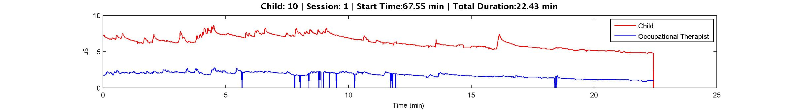
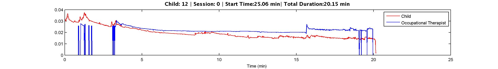

METHODS
In this section I outline the various methods I used in order to conduct an analysis of the data, including pre-processing methods, as well as the approaches used during processing.
PREPROCESSING
1. Finding Sessions with Viable Data
Due to difficulties with collecting the data, many of the sessions captured in the initial dataset were not viable for our use. During each session, both the child and treatment provider wore sensors on 2 ankles. The following selection criteria were applied after reading in raw EDA data into Matlab to locate viable sessions:
SELECTION CRITERIA:
- Measurements must be above .45 us
- Measurements must be continuous for a significant period of time (5 minutes and above)
- Measurements for a given subject must be continuous over one sensor, ie, continuous measurement on ankle 1 for the provider and continuous measurement on ankle 2 for the child. If sensor 1 stops having readings for 2 minutes, but sensor 2 has readings for those 2 minutes, the sensor 1 reading for a period containing those 2 minutes is not continuous.
- Engagement of subjects must be appropriate (depending on whether pool of interest was engaged or not engaged)
- Measurements must reflect realistic fluctuation (ie, no long periods of flatness)
To this end, I used Matlab (findRegions.m) to highlight regions of interest automatically before combing through the rest of the segments to filter for the rest of the selection criteria.
To give some idea of what "realistic fluctuation entails," this figure reflects "regular fluctuation" in both the OT and Child's EDA readings:

Whereas the following two figures show irregular fluctuation in the OT's signal, as it drops off sharply and remains very flat for a long period of time, or the entire session, even when normalized, still shows a very flat line:

2. Subtract off baseline activity
In order to effectively compare the two signals, we might subtract off baseline activity so that we are only comparing actual peaking behavior.
3. Filtering the Signal
I applied a band-pass filter to each sample in order to smooth the signal. To determine the appropriate parameters for the band-pass filter applied, I utilized the interactive signal processing scripts iFilter.m, and iSignal.m, written by T. O'Haver of UMD, located here. For specific parameters chosen for each sample, please see Results.
4. Peak Detection
I applied an automated peak detection algorithm, also written by T. O'Haver, implemented in his script iPeak.m, choosing specific parameters using the script's interactive feature in order to ascertain the best fit.
ANALYSES
1. Examining the Raw Signal
Graphed unfiltered EDA's of provider and child next to one another, as well as stacked on top of one another.
2. Examining the Filtered Signal
Graphed filtered EDA's of provider and child next to one another, as well as stacked on top of one another.
3. Correlations
Used script to vary time window of data, and then ran correlation script in matlab in order to find periods of time in which the filtered signals correlated. Script can be found here.
4. Average Delays between Peaks
Calculated and examined delay between peak in signal A and the nearest subsequent peak in signal B. Calculated and examined average delay over variable time intervals.
5. Average Number of Peaks
Calculated and examined average number of peaks over variable time intervals.
6. Labeled events
Examined video footage to determine what events were actually taking place during EDA measurements.
VISUALIZATIONS
All interactive visualizations were constructed using D3, an experimental data visualization library created by Mike Bostock of the Stanford Visualization Group. D3 can be found here.
SOFTWARE
I primarily used Matlab 2010Ra, Python 2.7, Adobe Dreamweaver CS5, and D3, a javascript based data visualization library to conduct this project.
DATA CONVERSION
I recieved the initial dataset in Microsoft Office Excel Spreadsheet format. I used a python script written by Peter Combs (pcombs@gmail.com) to convert my excel files into .mat files, and wrote my own conversion scripts to convert my matlab data into the JSON files that are read by D3.